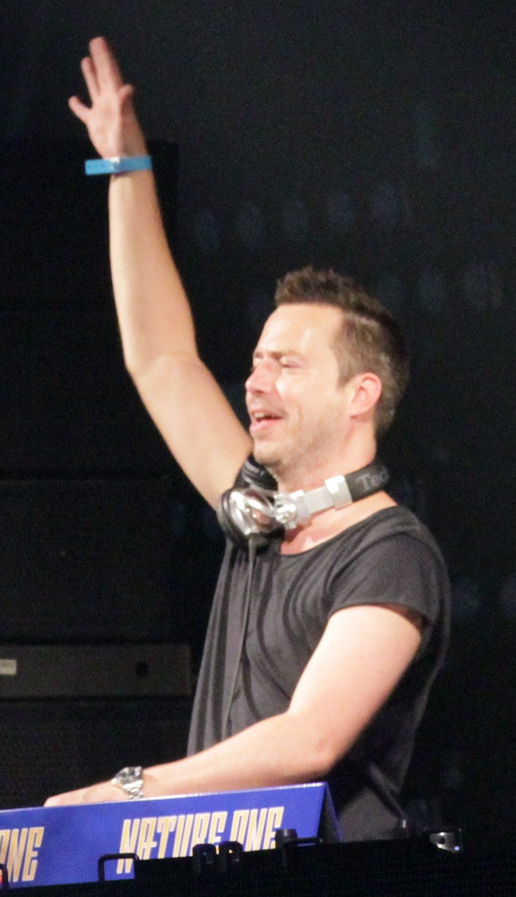

Sander van Doorn [Audio]: Nu-trance's greatest ambassador, Part 2


.JPG){kind=link}
STREAMING AUDIO INTERVIEW
Sander van Doorn is on fire in 2008. It’s an exciting time to be a trance fan, to say the very least and the scene is more vibrant and diverse than it’s ever been. While elder statesmen Tiesto, PVD and Armin continue to oversee proceedings from on high, the scene has witnessed an explosion of talented DJ/producers who are committed in taking the sound to places that it’s never been before. It’s been referred to many as ‘nu-trance’, and leading the charge is Holland’s Sander van Doorn.
“There was a big shift a couple of years ago when a lot of trance producers all of a sudden ‘saw the light’, and tried to combine different genres into a blend,” Sander told ITM. “Sometimes I’m referred to as by other DJs as an ambassador in bringing a new impulse to trance. I’ve always just done my own thing, but if this is the result then I’ve probably been doing the right thing.”
Sander has been hard at work since early in the decade, but it wasn’t until ‘06 that he really came to the scene’s attention with his devastating reworking of Armin van Buuren’s Control Freak. It was trance at its core, but the influence of techno, progressive and electro could all be felt strongly and most importantly, it sounded epic on the dancefloor. Since then he’s concocted a few original devastating anthems of his own, including the monstrous Riff which is still getting hammered a year after its release, and has come to epitomise all that can be achieved through the fusion of trance and techno.
And this October, Sander van Doorn will be heading up a lineup that includes some of the very best DJ/producers that ‘nu-trance’ has to offer when Godskitchen descends on Australia for its 10th anniversary tour. The events have been a regular fixture on our national dance calendar for a decade now, but there’s more excitement attached to Godskitchen in 2008 than ever before. ITM’s Angus Paterson talks to Sander van Doorn about being nu-trance’s greatest ambassador.
Click here if you missed Part 1 of our Sander Van Doorn interview, and don’t forget that Godskitchen spreads its wings at the following shows around the country this October:
Sat 4th Oct – Melbourne, Hisense Arena (NEW TICKETS ONSALE!)
Sun 5th Oct – Gold Coast, The Bedroom
Fri 10th Oct – Perth, Metro City (SOLD OUT)
Sat 11th Oct – Sydney, The Dome